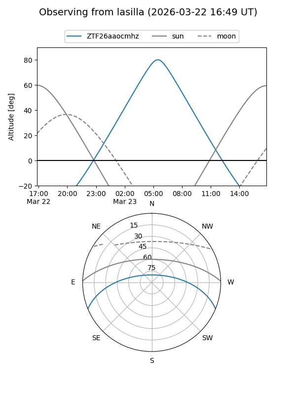
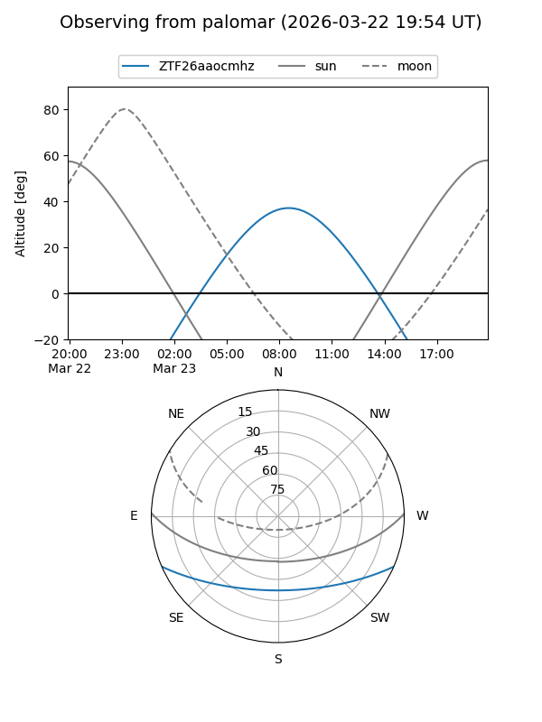

ZTF26aaocmhz
Target ZTF26aaocmhz at 2026-03-23 08:58
Aliases and brokers:
FINK: link
Lasair: link
ALeRCE: link
alt names
ZTF26aaocmhz (ztf,fink_ztf)
Coordinates:
equatorial (ra, dec) = 191.6162,-19.33438
equatorial (HMS+DMS) = 12:46:27.89,-19:20:03.78
galactic (l, b) = (301.3139,+43.52174)
Flags:
Photometry:
last ztfg=19.96
1 ztfg detections
Lightcurve
Visibility


Additional plots